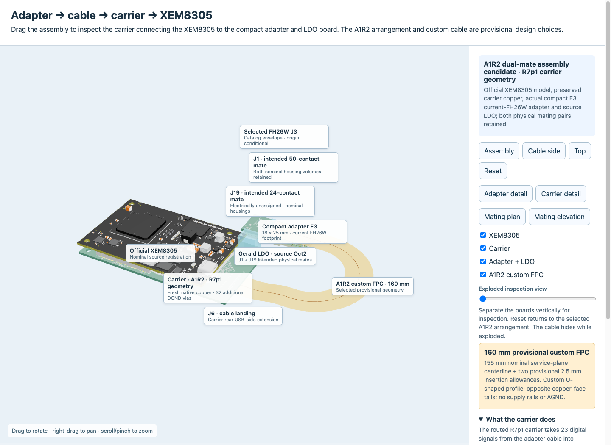

XEM8305 carrier
Assembly and flex mapping are ready for review. Check populated fit, mating clearance and the connection to the current E5 adapter.
5 October direct connection update: Open the direct LDO + XEM8305 connector review. This page preserves the earlier cabled A1R2 assembly.
Weekend update · 3–4 October 2026
The current XEM8305 assembly view includes both mating connectors, with signal mapping through the flex cable checked. Its adapter view is E3; the later LDO E5 layout is reviewed separately.

Loading current 3D preview…
Drag to rotate · scroll to zoom · right-drag to pan
XEM8305 · A1R2 · both mating connectors. The assembly depicts the E3 adapter; later E5 power-connector changes and populated fit need separate review.
XEM carrier and connection
I updated the XEM8305 carrier assembly view to include both mating connectors and checked the signal mapping through the flex cable. Separately, I traced the custom FPGA board’s power path: the XEM8310 carrier schematic already provides a protected path from the shared external supply to the custom micro-HDMI power contact. That carrier power routing and cable qualification are still unfinished. I have the assembly views and connection diagrams ready for review.
Assembly and flex mapping are ready for review. Check populated fit, mating clearance and the connection to the current E5 adapter.
The protected external-supply path exists in the schematic. Carrier power routing and cable qualification remain unfinished.
Separate project history
The XEM8305 backup carrier and XEM8310 receiver carrier are separate projects. The dated XEM8310/BRK8310 model and R12 study retain their own geometry and engineering status.